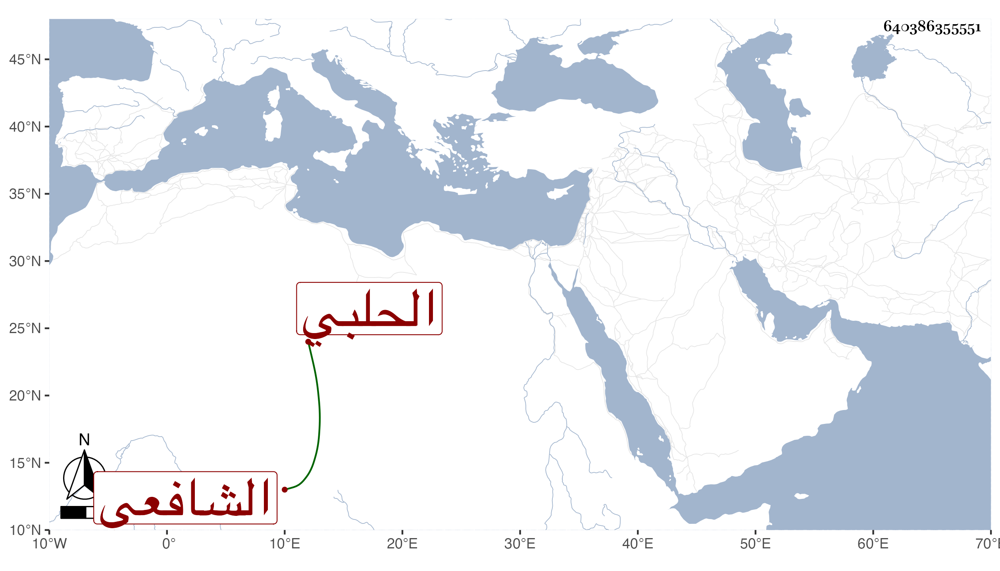

0902Sakhawi.DawLamic.ITO20230111-ara1.EIS1600.640386355551
Biography ID: 640386355551
377
الحسن بن أحمد بن صدقة بن محمد بن عين الدولة البدر الشكري الحصوني الحلبي الشافعي . ولد في أوائل سنة تسع وخمسين وسبعمائة وحفظ القرآن والحاوي الصغير وحله حلا حسنا ، ومن شيوخه في الفقه الشهاب الاذرعي والزين بن الكركي وفي النحو أبو جعفر الغرناطي والسراج الفوي والسيد الاخلاطي ومحمد الكازروني وعنه أخذ المنطق وعن الفوي والسحري الاصول ، وقد أعرض بأخرة عن الاشتغال مع فقهه ، وناب في القضاء عن الجمال الحسفاوي وله نظم حسن لكن ربما يدعى الشيء منه ويكون جميعه أو بعضه لغيره أو يأخذ معناه ثم يحوله لبحر آخر ، وهو كثير المجون محب للخلاعة واللهو عارف بعض الآلات المطربة وقد كتب عنه صاحبنا النجم بن فهد قصيدة رائية في شيخنا أودعتها الجواهر وكذا كتب عنه في مدحه غيرها . ومات قريب الاربعين ظنا .
